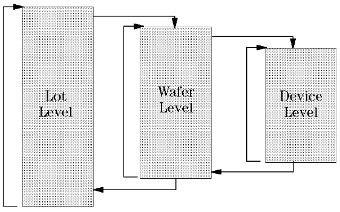
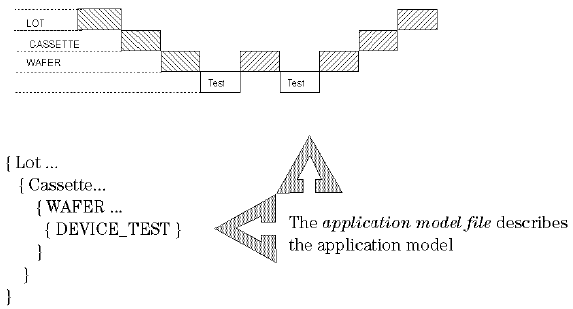

The application model structure
The application model imposes a hierarchical level structure onto the test process. Each level oversees the synchronization between routines on that level - such as prober/handler operations - and the routines on the levels below. Each level is executed repetitively until some instruction appears that forces the test process to either a lower or higher level.
The figure below shows how a typical application model is structured. Actions and screen prompts/feedback messages are defined for each specific level. The last level in the application model is always the device-test level. There is also a special level that specifies what happens when, for example, the user pauses the test process. Defining the test process in this way reduces the complexity of the test program.

The application model is described by the application model file.
This file is written in a dedicated high-level description language - the syntax of which is explained in chapter 2.
Note that for each level of the application model, you can have up to a maximum of 500 parameters.
The application model file's structure reflects that of the application model, as shown in the figure below.
